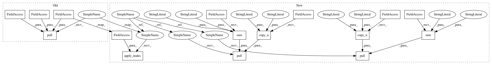

f5eb80d221fec8690e8cfb087256671545bb9a5a,examples/pytorch/jtnn/jtnn/jtnn_dec.py,DGLJTNNDecoder,decode,#DGLJTNNDecoder#Any#,239
Before Change
pu, _ = stack[-2]
u_pu = mol_tree_graph.edge_id(u, pu)
mol_tree_graph_lg.pull(
u_pu,
dec_tree_edge_msg,
dec_tree_edge_reduce,
self.dec_tree_edge_update,
)
mol_tree_graph.edata.update(mol_tree_graph_lg.ndata)
mol_tree_graph.pull(
pu,
dec_tree_node_msg,
After Change
// keeping dst_x 0 is fine as h on new edge doesn"t depend on that.
// DGL doesn"t dynamically maintain a line graph.
mol_tree_graph_lg = line_graph(mol_tree_graph, backtracking=False, shared=True)
mol_tree_graph_lg.pull(
uv,
DGLF.copy_u("m", "m"),
DGLF.sum("m", "s"))
mol_tree_graph_lg.pull(
uv,
DGLF.copy_u("rm", "rm"),
DGLF.sum("rm", "accum_rm"))
mol_tree_graph_lg.apply_nodes(self.dec_tree_edge_update.update_zm)
mol_tree_graph.edata.update(mol_tree_graph_lg.ndata)
mol_tree_graph.pull(v, DGLF.copy_e("m", "m"), DGLF.sum("m", "h"))
h_v = mol_tree_graph.ndata["h"][v:v+1]
q_input = torch.cat([h_v, mol_vec], 1)
q_score = torch.softmax(self.W_o(torch.relu(self.W(q_input))), -1)
_, sort_wid = torch.sort(q_score, 1, descending=True)
sort_wid = sort_wid.squeeze()
next_wid = None
for wid in sort_wid.tolist()[:5]:
slots = self.vocab.get_slots(wid)
cand_node_dict = create_node_dict(self.vocab.get_smiles(wid))
if (have_slots(u_slots, slots) and can_assemble(mol_tree, u, cand_node_dict)):
next_wid = wid
next_slots = slots
next_node_dict = cand_node_dict
break
if next_wid is None:
// Failed adding an actual children; v is a spurious node
// and we mark it.
mol_tree_graph.ndata["fail"][v] = cuda(torch.tensor([1]))
backtrack = True
else:
next_wid = cuda(torch.tensor([next_wid]))
mol_tree_graph.ndata["wid"][v] = next_wid
mol_tree_graph.ndata["x"][v] = self.embedding(next_wid)
mol_tree.nodes_dict[v] = next_node_dict
all_nodes[v] = next_node_dict
stack.append((v, next_slots))
mol_tree_graph.add_edges(v, u)
vu = new_edge_id
new_edge_id += 1
mol_tree_graph.edata["dst_x"][uv] = mol_tree_graph.ndata["x"][v]
mol_tree_graph.edata["src_x"][vu] = mol_tree_graph.ndata["x"][v]
mol_tree_graph.edata["dst_x"][vu] = mol_tree_graph.ndata["x"][u]
// DGL doesn"t dynamically maintain a line graph.
mol_tree_graph_lg = line_graph(mol_tree_graph, backtracking=False, shared=True)
mol_tree_graph_lg.apply_nodes(
self.dec_tree_edge_update.update_r,
uv
)
mol_tree_graph.edata.update(mol_tree_graph_lg.ndata)
if backtrack:
if len(stack) == 1:
break // At root, terminate
pu, _ = stack[-2]
u_pu = mol_tree_graph.edge_id(u, pu)
mol_tree_graph_lg.pull(u_pu, DGLF.copy_u("m", "m"), DGLF.sum("m", "s"))
mol_tree_graph_lg.pull(u_pu, DGLF.copy_u("rm", "rm"), DGLF.sum("rm", "accum_rm"))
mol_tree_graph_lg.apply_nodes(self.dec_tree_edge_update)
mol_tree_graph.edata.update(mol_tree_graph_lg.ndata)
mol_tree_graph.pull(pu, DGLF.copy_e("m", "m"), DGLF.sum("m", "h"))
stack.pop()
In pattern: SUPERPATTERN
Frequency: 3
Non-data size: 16
Instances
Project Name: dmlc/dgl
Commit Name: f5eb80d221fec8690e8cfb087256671545bb9a5a
Time: 2020-08-11
Author: coin2028@hotmail.com
File Name: examples/pytorch/jtnn/jtnn/jtnn_dec.py
Class Name: DGLJTNNDecoder
Method Name: decode
Project Name: dmlc/dgl
Commit Name: f5eb80d221fec8690e8cfb087256671545bb9a5a
Time: 2020-08-11
Author: coin2028@hotmail.com
File Name: examples/pytorch/jtnn/jtnn/jtnn_dec.py
Class Name: DGLJTNNDecoder
Method Name: run
Project Name: dmlc/dgl
Commit Name: f5eb80d221fec8690e8cfb087256671545bb9a5a
Time: 2020-08-11
Author: coin2028@hotmail.com
File Name: examples/pytorch/jtnn/jtnn/jtnn_dec.py
Class Name: DGLJTNNDecoder
Method Name: decode
Project Name: dmlc/dgl
Commit Name: f5eb80d221fec8690e8cfb087256671545bb9a5a
Time: 2020-08-11
Author: coin2028@hotmail.com
File Name: examples/pytorch/jtnn/jtnn/jtnn_enc.py
Class Name: DGLJTNNEncoder
Method Name: run